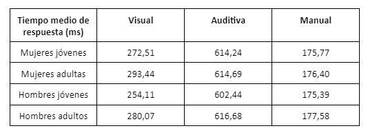
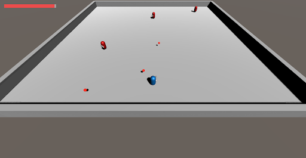

Game balance
The last part of the paper deals with the players' perception of the different types of challenges that Roguelite enemies can offer. A better understanding of our players' capabilities helps us to design their challenges. Moreover, this information is directly related to the balancing of the game systems, so it is also very useful for the balancing teams in the task of nerfs and buffs to the different enemy parameters.
Difficulty is a subjective term that depends both on previous experience and on the characteristics of the challenge to be overcome. Thus, we say that something is difficult when the challenge in question exceeds our knowledge and ability to perform it.
Prolonged time spent with a challenge perceived as too difficult can lead to frustration and disengagement with the game. Similarly, when faced with challenges perceived as too easy, the player does not feel sufficiently excited to continue playing.
Leaving aside the state of "flow" named in the level design, which represents a state of mind of the person in which they are immersed and enjoying the experience. We focus on analysing the differences in knowledge and skill that our players have when facing spatial and temporal challenges.
Before analysing the knowledge and skills of our players, we must take into account certain physical factors inherent to human beings, which are an important factor in the performance of some challenges.
It seems that certain factors, such as age and gender, are very important determinants of visual reaction times and perception of three-dimensional space. These abilities are directly related to the ease of dealing with the types of challenges posed by some enemies.
According to the study sample shown in this table, there are small differences in reaction times when comparing mean times by age, with adults of the same sex having around 20ms longer reaction times in the case of visual acuity. And there is a similar difference of 15ms in the comparison between genders of the same age.
In addition, there is a determining factor in the ability to perceive space. The 2013 study of men's and women's brains at the University of Pennsylvania concluded that men's and women's brains show different connectivity.
The study would eventually conclude that there are significant differences in the brains of men and women, which would make men somewhat superior in the abilities and speeds we are dealing with in these types of challenges.
In order to try to support what has been exposed in this work, in addition to investigating the capabilities of our players, we put into practice some playtesting sessions. Specifically, the aim of these sessions is to test different types of players with 2 very specific types of challenges: spatial challenges and temporal challenges. In order to answer "Which type of challenge is more difficult and why?"
A prototype of an enemy and a playable character has been created, and throughout the session the user will be challenged with different variants of the enemy that will change the challenge in question. During the session, the user's performance will be monitored and will conclude with a form about the user's perception of each enemy.
Analysing the results obtained to the questions of which enemy they found more difficult, we have obtained a clear advantage of the enemies that restrict the player's space more, and therefore, a greater difficulty of the challenges focused on managing space is perceived. There are some exceptions, and it seems to be common among adults, better space management versus poorer reactivity, so it can be observed that some people find enemies with fast projectiles more difficult.
An interesting observation, not foreseen in the test planning and theory, is that having faster projectiles makes them disappear from the player's range in less time, or in other words, the slower the projectiles go the longer they stay on screen, thus hindering the player more. Therefore, the speed of the projectiles indirectly affects the spatial challenge, as the more projectiles the longer they are in play, the more difficult the challenge features.
The main conclusion of this playtesting is a clear advantage, in terms of perceived difficulty, of challenges with an emphasis on reducing space over those with an emphasis on reducing reaction times. We therefore conclude that the skills and background knowledge of most players, in the area of spatial perception in a three-dimensional environment, are less developed than physical skills such as reaction times.
To the question marked in the objectives "What type of challenge is most difficult?", we can answer firmly: space challenges.
Additionally, it should be added that although not necessarily perceived as more challenging challenges, the reduction of relative rest times, such as in variant 2 of enemy 1, negatively affects the players' performance in overcoming the challenge in the same way as the increase in difficulty of the mechanics. This information is useful, as we can slow down the player's progress through the levels without the player perceiving a drastic increase in difficulty, thus decreasing frustration and feelings of injustice.